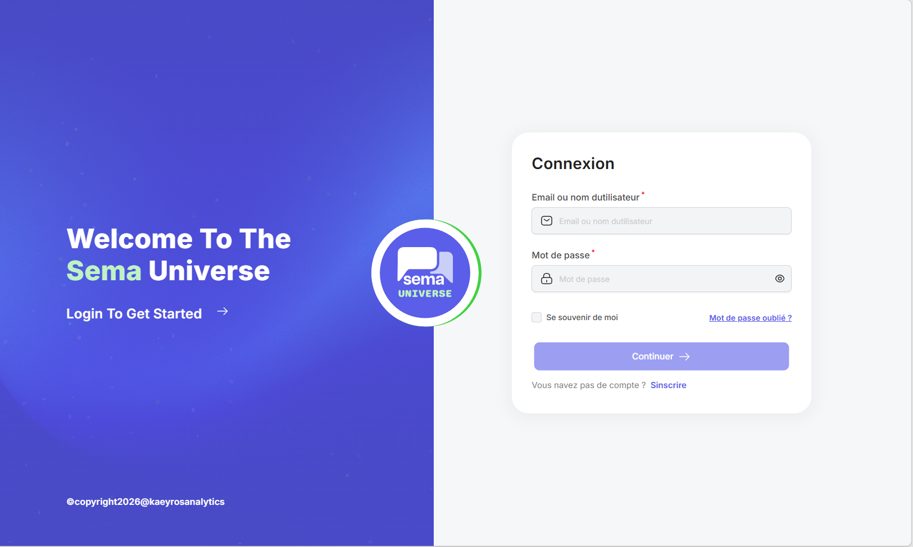

Premiers pas et authentification
Cette section explique comment accéder à Sema Universe, se connecter à Sema Core et reconnaître les premiers éléments de l’interface.
Accéder à la plateforme
1. Ouvrez votre navigateur.
2. Saisissez l’adresse de la plateforme : https://dashboard.dev.sem-a.com/fr.
3. Vérifiez que la page de connexion ou la page d’accueil Sema Universe s’affiche.
{kind=link}
Se connecter
1. Cliquez sur Se connecter si vous arrivez sur la page publique ou la page d’accueil.
2. Renseignez votre adresse e-mail ou votre identifiant.
3. Renseignez votre mot de passe.
4. Validez le formulaire.
5. Si une vérification supplémentaire est demandée, suivez les instructions affichées.
{kind=link}

Identifier l’espace de travail
Après connexion, vérifiez :
Le nom de l’espace de travail ;
Le produit actif, par exemple Sema Core ;
Les modules visibles dans le menu ;
Votre profil utilisateur ;
La langue de l’interface.

Problèmes fréquents de connexion
1. Mot de passe incorrect
Vérifiez que le mot de passe est saisi correctement. Si la fonctionnalité existe, utilisez le lien de réinitialisation. Sinon, contactez l’administrateur de votre espace de travail.
2. Compte non reconnu
Assurez-vous d’utiliser l’adresse e-mail liée à votre compte Sema. Si vous avez reçu une invitation, vérifiez que vous avez bien finalisé l’activation du compte.
3. Module invisible
Si un module attendu n’apparaît pas, demandez à l’administrateur de vérifier votre rôle et vos permissions.
Bon à savoir
Important
Ne partagez jamais votre mot de passe. Si vous utilisez un ordinateur partagé, déconnectez-vous après votre session.